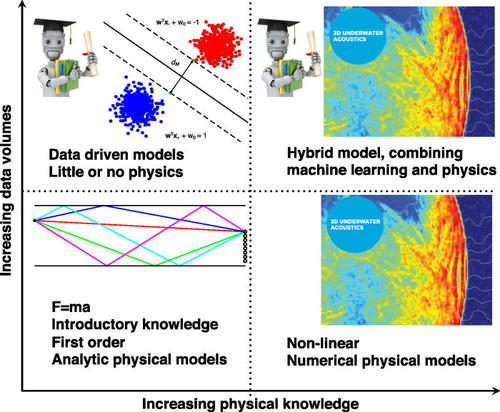

An AI music experience, prepared by Sevag for MUMT 618, Fall 2020
Machine learning and deep learning techniques in recent years have an increasing presence in the field of musical acoustics[1]. As a preliminary introduction to generating music using neural networks, you can view my paper presentation introducing WaveNet[2], SampleRNN[3], and other novel approaches to neural audio.
In the presentation, I outlined that there exist both unconstrained, unstructured models for generating audio in the waveform domain (resulting in babbling or confusing outputs), and structured physical computational models that have been used in traditional audio synthesis (that don't sound very natural).
In this project, I'll use SampleRNN for unstructured neural audio synthesis. From this diagram, I'll be targeting the top left image:

By augmenting ML methods (top left) with physical models (bottom right) to obtain hybrid models (upper right), a synergy of the strengths of physical intuition and data-driven insights can be obtained [1]
Motivation
The dadabots[5] have been creating music with neural networks, trained on the music of specific artists:
My initial idea was to see if I could imitate the dadabots by training SampleRNN in a variety of experiments:
Train on a single album and generate music, just to familiarize myself with SampleRNN
Two different artists, trained separately, to generate music that sounds like Artist A and Artist B
Combined training on both artists, to generate music that sounds like Artist A + Artist B
Training on separate instruments to layer the results over each other
Training on separate song segments (e.g. choruses, verses, guitar solos) and concatenating the generated outputs to make a Frankensong
To supplement the illusion of a "real" music artist, I also want to generate album art using additional AI techniques; as these are not directly related to musical acoustics, they'll occupy a small section at the bottom of this report.
To explain the overall aesthetic/theme of death metal + sharks:
Deeper dives
Despite the "black box" nature of WaveNet and SampleRNN, we can do a below-the-surface examination of the models (including training and generation steps) to get a better sense of:
Input data and preprocessing - how are the training waveforms represented?
The model/neural network itself - what are WaveNet and SampleRNN computing?
Loss function - how do WaveNet/SampleRNN know that one set of parameters is better than the other? What defines the "correct" output of a waveform?
Generation - after training a model with low loss, how do WaveNet and SampleRNN use the trained model to generate brand new waveforms of audio?
A difficult step in any machine learning experiment is actually reproducing the claims of papers[6]. Most of the models have outdated dependencies. You most likely can't run something that was published in 2017, as the popular machine learning frameworks on which most papers depend (Torch, Keras, Tensorflow) are evolving at a fast pace.
As an example, I tried to unsuccessfully run the original SampleRNN code, and many other forks, until finding a good one:
https://github.com/soroushmehr/sampleRNN_ICLR2017
https://github.com/worosom/docker-zvk-SampleRNN
https://github.com/ZVK/sampleRNN_ICLR2017
The dadabots' own fork: https://github.com/Cortexelus/dadabots_sampleRNN/wiki/Installing-Dadabots-SampleRNN-on-Ubuntu
I finally found the RNCM (Royal Northern College of Music) PRiSM (Practice and Research in Science and Music) lab released a modern implementation of 3-tier SampleRNN[7]:
PRiSM is shortly going to publish its own implementation, using TensorFlow 2, and we’ll be explaining the features of the PRiSM SampleRNN in our next instalment – when we will also make the code available on PRiSM’s GitHub pages, along with a number of pretrained and optimised models.
Hardware and OS setup
I ran all of the training and experiments on my personal desktop computer, consisting of:
AMD Ryzen 7 3700X 8c/16t processor
32GB RAM
1TB NVME storage
NVIDIA RTX 2070 SUPER GPU
The OS is Fedora 32, and NVIDIA drivers and CUDA toolkit were installed using negativo17's Fedora-nvidia repositories[11].